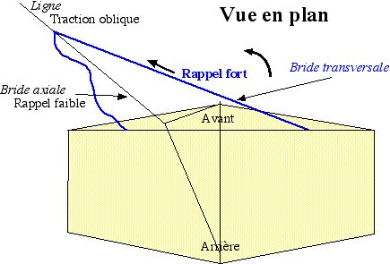
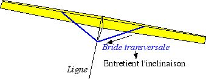
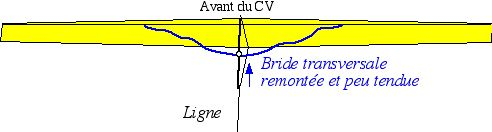
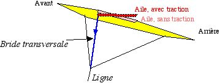
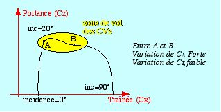

D'abord je précise quelques définitions que j'utiliserai :
Bride transversale : Bride "en Y" symétrique qui part du milieu pour s'attacher de chaque côté. Je la schématiserai par deux ficelles, mais elle peut être multiple comme sur les flow-forms. Lacet : mouvement du nez droite/gauche. Roulis : rotation autour de l'axe longitudinal (« prise d'inclinaison ») Dièdre : angle des ailes (positif vers le haut). Effet dièdre : tend à faire pencher en sens inverse un cerf-volant qui se déplace latéralement : déplacement à droite => fait pencher à gauche. Un CV libre et penché à droite glisse à droite et cet effet le remet à l'horizontale.
Cet effet n'est pas obligatoirement obtenu par un angle des ailes. Par exemple une partie verticale inférieure (dérive, quille, boîte...) crée un effet dièdre en augmentant la pression sous l'aile située du côté du déplacement. Aile : par définition, contaminé par mes oiseaux, j'utiliserai "aile" pour toute surface portante située en dehors de l'axe longitudinal.
Généralités
Avantages de la bride transversale :
1) soulage l'effort sur les ailes et leur attache centrale (indispensable sur certains CVs : roues, gonflables...).
2) ramène mieux le nez dans l'axe que la bride centrale, d'autant plus efficacement que le CV vole à plat.

Inconvénients de la bride transversale :
Si le CV part de côté, la bride transversale tend à maintenir son inclinaison.

Si l'effet dièdre est inférieur à cet effet, l'inclinaison subsiste voire augmente d'où :
1) CV incliné qui cherche à s'éloigner encore latéralement (parfois jusqu'au sol !), effet inverse de celui voulu.
2) CV pas à plat (les 2 côtés de la bride tirent autant) donc pas de rappel en lacet ou faible.
Pour diminuer l'effet de maintien de l'inclinaison en cas d'écart latéral, on peut diminuer l'effet de cette bride en plaçant son point central plus haut que le point d'attache de la ligne, par exemple au milieu de la bride avant. On peut aussi avoir cette bride presque détendue, n'agissant qu'en cas de traction latérale marquée. Attention : par vent fort, les ailes plient et on se retrouve avec une bride hypertendue et l'inconvénient ci-dessus : prévoir une possibilité de réglage si le CV est souple.

Conclusion partielle : bride à n'utiliser qu'avec un CV avec un bon effet dièdre et volant déjà assez à plat.
Précautions près du sol : avec peu de longueur de ligne (entre 10 m et le sol), la bride transversale a tendance à agir sèchement quand elle se tend et ainsi à renvoyer plus fort le CV du côté opposé. des oscillations peuvent alors se produire amenant finalement la bête au sol sur le bout d'une aile avec éventuellement des effets destructeurs. le cervoliste peut contrer ces mouvements en déplaçant la main latéralement comme le CV pour diminuer le rappel. dans cette phase, il vaut mieux soit lâcher rapidement de la ligne si on décolle, soit ramener rapidement jusqu'à soi en profitant d'une phase à peu près stabilisée. cette instabilité avec peu de ligne est bien connue avec beaucoup de cerfs-volants mais particulièrement sensible dans le cas présent.
Cas particulier : la bride est attachée à l'avant des "ailes" :
- Le rappel en cap est encore amélioré, le point étant plus en avant du centre de rotation ;
- L'incidence de l'aile sur laquelle la bride transversale tire diminue. Sa traînée diminue donc, et elle a tendance à avancer par rapport à l'autre d'où rappel en cap.

NB : on peut objecter que incidence diminuée = gauchissement (effet d'hélice) => roulis vers l'extérieur, contraire à l'effet désiré. Mais cet effet est moins important que l'effet en lacet sur la plupart des CVs. Nota pour les spécialistes : les CVs volent en général dans une zone de la polaire aux environs de la portance max où l'effet de la variation d'incidence sur la portance est limité :

- Avantage secondaire, l'incidence des ailes diminue d'autant plus que le vent est fort, ce qui diminue la traction et protège le cerf-volant.
À retenir :
La bride transversale procure un meilleur rappel en cap et rend plus résistant le cerf-volant.
Elle est à employer avec précaution :
- Elle peut engendrer des CVs qui vont partir doucement sur un côté mais sans revenir, et ce jusqu'au sol. Si un CV présente ce défaut, on peut essayer : de supprimer cette bride si elle n'est pas indispensable à la résistance, de la détendre de manière à ce qu'elle n'entre en action qu'en vol désaxé, de rapprocher de l'axe ses points d'attache latéraux, d'augmenter l'effet dièdre du CV. On comparera les résultats des différentes configurations.
- Il ne faut l'employer que sur des CVs qui ont un effet dièdre suffisant.
- Si on l'emploie, il est préférable de l'attacher à l'avant de l'aile. Outre un meilleur résultat sur le lacet, ceci protège le CV (et la ligne, et les mains du pilote...) contre les surventes.